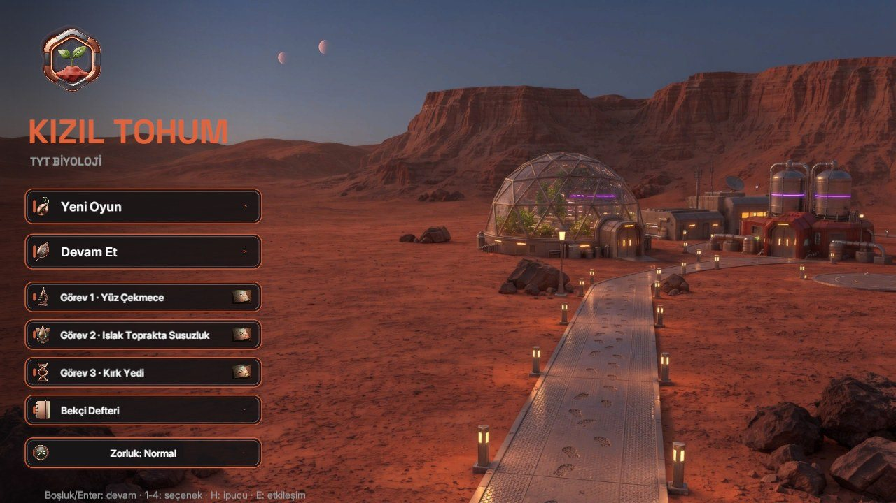

Kayıp Pilot
Coğrafya
TYT Coğrafya macerası
Düşen helikopterin pilotu Deniz telsizden yardım istiyor. Coğrafya sorularını çöz, ipuçlarını birleştir, onu bul.
3BMacera
Oyna
Yapımcı: Emir Musa Karaduman
TYT hazırlık oyunları
Konuları oyunla öğren. TYT’nin 10 dersi için eğitici oyunlar tek yerde.
Kayıp Pilot
TYT Coğrafya macerası
Düşen helikopterin pilotu Deniz telsizden yardım istiyor. Coğrafya sorularını çöz, ipuçlarını birleştir, onu bul.

Kızıl Tohum
TYT Biyoloji macerası
Kızıl bir gezegende kurulan seranın görevlerini biyoloji bilginle çöz.

Kayıp Formül
Matematik zaman yolculuğu
Matematik silindi, zaman makinesi susuyor. Üç çağa yolculuk et, kayıp formülü geri getir.